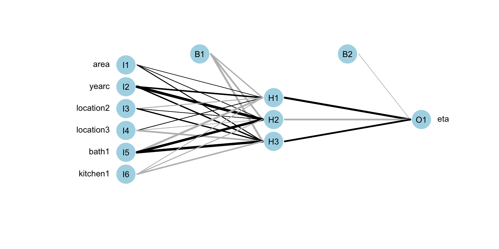

flowchart LR A[GAMLSS] --> L[Parametric] A --> N[Smooth] L --> B(Likelihood) L --> D(Bayesian) L --> E(Boosting) N --> C(Penalised Likelihood) N --> D(Bayesian) N --> E(Boosting) B --> G[beta's] C --> F[beta's, gamma's, & lambda's] E --> F D --> F D --> G E --> G
Fitting models
Mikis Stasinopoulos
Bob Rigby
Fernanda De Bastiani
Gillian Heller
Niki Umlauf
Introduction
questions
do my data support a GAMLSS model?
do I need GAMLSS to answer my questions?
size of the data
questions of interest
this talk
the basic GAMLSS algorithmdifferent statistical approaches for fitting a GAMLSS modeldifferent machine learning techniques for fitting a GAMLSS model.
Algorithms
GAMLSS
\[\begin{split} y_i & \stackrel{\small{ind}}{\sim }& {D}( \theta_{1i}, \ldots, \theta_{ki}) \nonumber \\ g(\theta_{1i}) &=& b_{10} + s_1({x}_{1i}) + \ldots, s_p({x}_{pi}) \nonumber\\ \ldots &=& \ldots \nonumber\\ g({\theta}_{ki}) &=& b_0 + s_1({x}_{1i}) + \ldots, s_p({x}_{pi}) \end{split} \qquad(1)\]
GAMLSS + ML
\[\begin{split} y_i & \stackrel{\small{ind}}{\sim }& {D}( \theta_{1i}, \ldots, \theta_{ki}) \nonumber \\ g({\theta}_{1i}) &=& {ML}_1({x}_{1i},{x}_{2i}, \ldots, {x}_{pi}) \nonumber \\ \ldots &=& \ldots \nonumber\\ g({\theta}_{ki}) &=& {ML}_1({x}_{1i},{x}_{2i}, \ldots, {x}_{pi}) \end{split} \qquad(2)\]
two major problems
The task within
GAMLSSis to find ;how the x’s effect the parameters of the distribution i.e \(\boldsymbol{\theta}(X)\) and
the appropriate distribution for the response i.e. \(D(Y|\boldsymbol{\theta}(X))\)
DISTRIBUTION
The
rangeof the response should determine the type of distributionif we know the right variables we could determine a
adequatedistribution by looking over a set of appropriate distributionsif
oneof the variable is very important i.e. time, age it can be used otherwise use alinearmodel for all parameters (which works fast) to pick up a distribution
Parameters for Estimation
Given a distribution we need to estimate the;
distribution parameters
coefficient parameters
- **coefficients** - **random effects** and thehyper-parameters
flowchart
The Basic Algorithm for GAMLSS
- For specified distribution family, data and machine learning (ML) model.
Initialize: set starting values for all distribution parameters \((\hat{\boldsymbol{\mu}}^{(0)}, \hat{\boldsymbol{\sigma}}^{(0)}, \hat{\boldsymbol{\nu}}^{(0)}, \hat{\boldsymbol{\tau}}^{(0)} )\).
For i in \(1,2,\ldots\)
fix \(\hat{\boldsymbol{\sigma}}^{(i-1)}\),\(\hat{\boldsymbol{\nu}}^{(i-1)}\), and \(\hat{\boldsymbol{\tau}}^{(i-1)}\) and fit a ML model to iterative response \(\textbf{y}_{\mu}\) using iterative weights \(\textbf{w}_{\mu}\) to obtain the new \(\hat{\boldsymbol{\mu}}^{(i)}\)
fix \(\hat{\boldsymbol{\mu}}^{(i)}\),\(\hat{\boldsymbol{\nu}}^{(i-1)}\), and \(\hat{\boldsymbol{\tau}}^{(i-1)}\) and fit a ML model to iterative response \(\textbf{y}_{\sigma}\) using iterative weights \(\textbf{w}_{\sigma}\) to obtain the new \(\hat{\boldsymbol{\sigma}}^{(i)}\)
fix \(\hat{\boldsymbol{\mu}}^{(i)}\),\(\hat{\boldsymbol{\sigma}}^{(i)}\), and \(\hat{\boldsymbol{\tau}}^{(i-1)}\) and fit a ML model to iterative response \(\textbf{y}_{\nu}\) using iterative weights \(\textbf{w}_{\nu}\) to obtain the new \(\hat{\boldsymbol{\nu}}^{(i)}\)
fix \(\hat{\boldsymbol{\mu}}^{(i)}\),\(\hat{\boldsymbol{\sigma}}^{(i)}\), and \(\hat{\boldsymbol{\nu}}^{(i)}\) and fit a ML model to iterative response \(\textbf{y}_{\tau}\) using iterative weights \(\textbf{w}_{\tau}\) to obtain the new \(\hat{\boldsymbol{\nu}}^{(i)}\)
check if the global deviance, \(-2(\textit{log-likelihood})\) does not change repeat otherwise exit
Important
for the assumed distribution the log-likelihood is needed (and the first and second derivatives with respect to the parameters)
an hierarchy of the parameters exist a good location model is required before model the scale parameters e.t.c.
orthogonality of the parameters leads to better convergence and interpretation
Checking orthogonality
Specify a distribution family, and select values for all the parameters.
generate a sample of of N observations (default \(N=10000\))
fit the distribution to the generated sample.
display the correlation coefficients of the estimated predictors, \(\eta_{\theta}\).
Checking orthogonality (con.)
Figure 2: Paramater orthogonality for BCTo distribution
Machine Learning Models
properties
are the standard errors available?
do the x’s need standardization.
about the algorithm
- stability - speed - convergencenonlinear terms
interactions
dataset type
is the selection of x’s automatic?
interpretation
Linear Models
Linear Models
Call:
gamlss2(formula = rent ~ poly(area, 3) + poly(yearc, 3) + location +
bath + kitchen + cheating | poly(area, 3) + poly(yearc, 3) +
location + bath + kitchen + cheating, data = da, family = BCTo,
... = pairlist(trace = FALSE))
---
Family: BCTo
Link functions: mu = log, sigma = log, nu = identity, tau = log
*--------
Coefficients:
Estimate Std. Error t value Pr(>|t|)
mu.(Intercept) 5.71590 0.02366 241.595 < 2e-16 ***
mu.location2 0.09005 0.01028 8.760 < 2e-16 ***
mu.location3 0.21550 0.03717 5.798 7.39e-09 ***
mu.bath1 0.05882 0.02083 2.824 0.00478 **
mu.kitchen1 0.11118 0.02360 4.710 2.58e-06 ***
mu.cheating1 0.34265 0.02422 14.148 < 2e-16 ***
mu.poly(area, 3)1 13.33793 0.31111 42.871 < 2e-16 ***
mu.poly(area, 3)2 -2.01312 0.32273 -6.238 5.05e-10 ***
mu.poly(area, 3)3 0.63310 0.30519 2.074 0.03812 *
mu.poly(yearc, 3)1 4.77815 0.34420 13.882 < 2e-16 ***
mu.poly(yearc, 3)2 3.66120 0.28934 12.654 < 2e-16 ***
mu.poly(yearc, 3)3 -0.76633 0.29134 -2.630 0.00857 **
sigma.(Intercept) -1.16028 0.05323 -21.799 < 2e-16 ***
sigma.location2 0.05851 0.02972 1.969 0.04905 *
sigma.location3 0.21471 0.09343 2.298 0.02162 *
sigma.bath1 0.03078 0.06067 0.507 0.61191
sigma.kitchen1 0.01141 0.07309 0.156 0.87597
sigma.cheating1 -0.23024 0.05114 -4.502 6.98e-06 ***
sigma.poly(area, 3)1 1.90318 0.84748 2.246 0.02479 *
sigma.poly(area, 3)2 -0.70530 0.81681 -0.863 0.38794
sigma.poly(area, 3)3 1.23728 0.83095 1.489 0.13659
sigma.poly(yearc, 3)1 -7.40430 0.89183 -8.302 < 2e-16 ***
sigma.poly(yearc, 3)2 -0.42953 0.81051 -0.530 0.59619
sigma.poly(yearc, 3)3 3.66610 0.78688 4.659 3.31e-06 ***
nu.(Intercept) 0.68241 0.05732 11.906 < 2e-16 ***
tau.(Intercept) 3.12679 0.36811 8.494 < 2e-16 ***
---
Signif. codes: 0 '***' 0.001 '**' 0.01 '*' 0.05 '.' 0.1 ' ' 1
*--------
n = 3082 df = 26 res.df = 3056
Deviance = 38164.1012 Null Dev. Red. = 6.18%
AIC = 38216.1012 elapsed = 0.50secAdditive Models
madditive <- gamlss2(rent~s(area)+s(yearc)+location+bath+kitchen+
cheating|s(area)+s(yearc)+location+bath+kitchen+cheating,
family=BCTo, data=da, trace=F)
GAIC(mlinear, madditive) AIC df
madditive 38196.79 31.99106
mlinear 38216.10 26.00000 AIC df
mlinear 38372.97 26.00000
madditive 38389.81 31.99106Additive Models (con.)
Call:
gamlss2(formula = rent ~ s(area) + s(yearc) + location + bath +
kitchen + cheating | s(area) + s(yearc) + location + bath +
kitchen + cheating, data = da, family = BCTo, ... = pairlist(trace = F))
---
Family: BCTo
Link functions: mu = log, sigma = log, nu = identity, tau = log
*--------
Coefficients:
Estimate Std. Error t value Pr(>|t|)
mu.(Intercept) 5.71441 0.02085 274.133 < 2e-16 ***
mu.location2 0.08788 0.01102 7.977 2.11e-15 ***
mu.location3 0.20994 0.04962 4.231 2.39e-05 ***
mu.bath1 0.05822 0.04262 1.366 0.17206
mu.kitchen1 0.10870 0.03636 2.990 0.00281 **
mu.cheating1 0.34716 0.02024 17.148 < 2e-16 ***
sigma.(Intercept) -1.15391 0.03702 -31.168 < 2e-16 ***
sigma.location2 0.05338 0.02264 2.358 0.01845 *
sigma.location3 0.21232 0.08615 2.464 0.01378 *
sigma.bath1 0.03452 0.08290 0.416 0.67713
sigma.kitchen1 0.01909 0.07583 0.252 0.80122
sigma.cheating1 -0.23645 0.03761 -6.288 3.69e-10 ***
nu.(Intercept) 0.69396 0.04544 15.272 < 2e-16 ***
tau.(Intercept) 3.27139 0.07556 43.292 < 2e-16 ***
---
Signif. codes: 0 '***' 0.001 '**' 0.01 '*' 0.05 '.' 0.1 ' ' 1
---
Smooth terms:
mu.s(area) mu.s(yearc) sigma.s(area) sigma.s(yearc)
edf 6.6206 6.2852 1.0123 4.0731
*--------
n = 3082 df = 31.99 res.df = 3050.01
Deviance = 38132.8112 Null Dev. Red. = 6.25%
AIC = 38196.7933 elapsed = 0.60secAdditive Models (con.)
Regression Trees
source("~/Dropbox/GAMLSS-development/nnet/reg.tree.R")
mregtree <- gamlss2(rent~tree(~area+yearc+location+bath+kitchen+cheating)|
tree(~area+yearc+location+bath+kitchen+cheating),
family=BCTo, data=da, trace=FALSE)
GAIC(mlinear, madditive, mregtree) AIC df
madditive 38196.79 31.99106
mlinear 38216.10 26.00000
mregtree 38622.27 26.00000 AIC df
mlinear 38372.97 26.00000
madditive 38389.81 31.99106
mregtree 38779.13 26.00000Regression Trees (con.)

Regression Trees (continue)
Neural Networks (fit)
f <- rent ~ n(~area+yearc+location+bath+kitchen, size=10)|
n(~area+yearc+location+bath+kitchen, size=3)
mneural <- gamlss2(f,family=BCTo, data=da)GAMLSS-RS iteration 1: Global Deviance = 38201.2516 eps = 0.290015
GAMLSS-RS iteration 2: Global Deviance = 38161.604 eps = 0.001037
GAMLSS-RS iteration 3: Global Deviance = 38156.2641 eps = 0.000139
GAMLSS-RS iteration 4: Global Deviance = 38155.6106 eps = 0.000017
GAMLSS-RS iteration 5: Global Deviance = 38155.2744 eps = 0.000008 AIC df
madditive 38196.79 31.99106
mlinear 38216.10 26.00000
mneural 38375.27 110.00000
mregtree 38622.27 26.00000 AIC df
mlinear 38372.97 26.00000
madditive 38389.81 31.99106
mregtree 38779.13 26.00000
mneural 39038.94 110.00000Neural Networks (plot)

Neural Networks (plot)
random forest
f <- rent ~ cf(~area+yearc+location+bath+kitchen)| cf(~area+yearc+location+bath+kitchen)
mcf <- gamlss2(f,family=BCTo, data=da)GAMLSS-RS iteration 1: Global Deviance = 38466.2361 eps = 0.285090
GAMLSS-RS iteration 2: Global Deviance = 38312.7521 eps = 0.003990
GAMLSS-RS iteration 3: Global Deviance = 38307.7194 eps = 0.000131
GAMLSS-RS iteration 4: Global Deviance = 38306.3367 eps = 0.000036
GAMLSS-RS iteration 5: Global Deviance = 38306.1885 eps = 0.000003 AIC df
madditive 38196.79 31.99106
mlinear 38292.62 19.00000
mneural 38380.62 110.00000
mregtree 38622.27 26.00000
mcf 38714.19 204.00000LASSO-RIDGE
In gamlss2 there are the functions;
la()which fit the model using a modified smoothing techniquelasso()which connectsgamlss2andglmnetthe
glmnetprovides elastic net estimation withalpha=1equal to lasso andalpha=0equal to ridge regressionthe
glmnetdo not fit a single model but provides the path of all possible modelsin
gamlss2the model is selected usingBIC
LASSO
area yearc location bath kitchen cheating
132 68 3 2 2 2
100 % of data are saved,
that is, 3082 observations. area yearc location bath kitchen cheating
132 68 3 2 2 2 GAMLSS-RS iteration 1: Global Deviance = 38208.7594 eps = 0.289875
GAMLSS-RS iteration 2: Global Deviance = 38173.0959 eps = 0.000933
GAMLSS-RS iteration 3: Global Deviance = 38171.6335 eps = 0.000038
GAMLSS-RS iteration 4: Global Deviance = 38171.2781 eps = 0.000009 AIC df
madditive 38132.81 31.99106
mneural 38155.27 110.00000
mlinear 38164.10 26.00000
bnet 38171.28 24.00000
mcf 38306.19 204.00000
mregtree 38570.27 26.00000LASSO 1
Call:
gamlss2(formula = fnet1, data = da, family = BCTo)
---
Family: BCTo
Link functions: mu = log, sigma = log, nu = identity, tau = log
*--------
Coefficients:
Estimate Std. Error t value Pr(>|t|)
mu.(Intercept) 6.073499 0.007714 787.37 <2e-16 ***
sigma.(Intercept) -1.339268 0.007751 -172.79 <2e-16 ***
nu.(Intercept) 0.682562 0.039437 17.31 <2e-16 ***
tau.(Intercept) 3.072434 0.061779 49.73 <2e-16 ***
---
Signif. codes: 0 '***' 0.001 '**' 0.01 '*' 0.05 '.' 0.1 ' ' 1
---
Smooth terms:
mu.lasso(~area+area2+area3+yearc+yearc2+yearc3+bath1+cheating0+kitchen1+location1+location2)
edf 12
sigma.lasso(~area+area2+area3+yearc+yearc2+yearc3+bath1+cheating0+kitchen1+location1+location2)
edf 8
*--------
n = 3082 df = 24 res.df = 3058
Deviance = 38171.2781 Null Dev. Red. = 6.16%
AIC = 38219.2781 elapsed = 0.77secLASSO 2
(Intercept) area area2 area3 yearc yearc2
0.170078437 0.244928458 -0.033422433 0.004850439 0.138919707 0.062595342
yearc3 bath1 cheating0 kitchen1 location1 location2
-0.013271475 0.060201306 -0.338518720 0.111794049 -0.222495637 -0.131310857 (Intercept) area area2 area3 yearc yearc2
0.044503278 0.019210761 -0.013455170 0.005293646 -0.249616969 0.000000000
yearc3 bath1 cheating0 kitchen1 location1 location2
0.055728860 0.000000000 0.212985531 0.000000000 -0.059687857 0.000000000 NULLPrincipal Componet Regression
functions
pc()andpcr()ingamlss.foreachpackage forgamlssPCR is non implemented for
gamlss2yet
summary
| ML Models | coef. s.e. | stand. of x’s | algo. stab., speed, conv. | non-linear terms | inter- actions | data type | auto sele-ction | interpre- tation |
|---|---|---|---|---|---|---|---|---|
| linear | yes | no | yes, fast, v.good | poly | declare | \(n>r\) | no | v. easy |
| additive | no | no | yes, slow, good | smooth | declare | \(n>r\) | no | easy |
| RT | no | no | no, slow, bad | trees | auto | \(n>r\)?? | yes | easy |
summary (continue)
| ML Models | coef. s.e. | stand. of x’s | algo. stab., speed, conv. | non-linear terms | inter- actions | data type | auto sele-ction | interpre- tation |
|---|---|---|---|---|---|---|---|---|
| NN | no | 0 to 1 | no, \(\,\,\) ok, \(\,\,\) ok | auto | auto | both? | yes | v. hard |
| RF | no | no | no, slow, slow | YES | no | both | auto | hard |
| LASSO | no | yes | yes, fast, good | poly | declare | both | auto | easy |
summary (continue)
| ML Models | coef. s.e. | stand. of x’s | algo. stab., speed, conv. | non-linear terms | inter- actions | data type | auto sele-ction | interpre- tation |
|---|---|---|---|---|---|---|---|---|
| Boost | no | no | yes, fast, good | smooth trees | declare | \(n<<r\) | yes | easy |
| MCMC | yes | no | good, ok, \(\,\,\) ok | smooth | declare | \(n>r\) | no | easy |
| PCR | yes | yes | yes, fast, good | poly | declare | both | auto | hard |
end


 The Books
The Books

www.gamlss.com